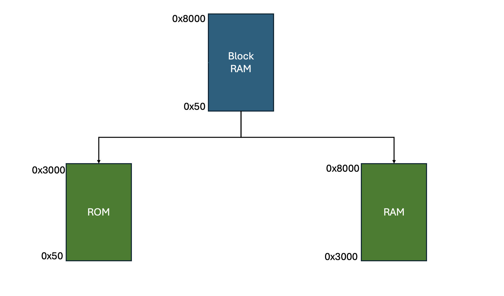

As we explain in our Poster for the International Conference on Field-Programmable Logic and Applications 2024 (FPL2024), most FPGA vendors’ soft processors don’t properly re-initialize global variables after a soft reset.
You can also read our detailed Paper on the issue and our proposed workarounds.
The add_load_sections.sh script creates new sections in the linker script. These sections are then used by the .data, .sdata and .tdata sections as load sections. For example the line
.data : AT ( __load_data_start) {
defines that all .data information is stored in the new section .load_data. Later, the contents of the .load_data section are then copied to the .data section with the code from 2a or 2b.
Use the script as follows:
./add_load_sections.sh <linkerscript.ld>
The bash script split_into_ram_rom.sh splits a single BlockRAM memory segment in the provided linker script into two logical segments labeled mbRAM and mbROM. Required for the command are the path to the linkerscript and a hex value which represents the start adress of the writeable (RAM) portion. The CLI call looks like this:
./split_into_ram_rom.sh <linkerscript.ld> <hex-value>
For example, for a new origin address with input 0x3000 the splitting would look something like:
For further information on how the script works, see split_into_rom_ram.sh
The first way to initialize globals from the load sections is to include the provided headerfile init_mb_globals.h. Then, the function init_mb_globals() needs to be called at the start of main() :
#include "init_mb_globals.h"
int main()
{
init_mb_globals();
...
The second way is to compile the load function into a static library’s constructor so that it is run before the main() function is entered. To build the library init_mb_globals_lib.a, source the script make_initglobals_lib.sh like this:
source make_initglobals_lib.sh
To be able to compile the library, paths to the mb-gcc tools must be known by setting the Vitis environment variables.
After successful compilation, the script will produce an option string that must be added to the Microblaze application’s linker arguments.
In case of using 1b to move sections to a logical ROM segment, it is still necessary to make the segment read-only in hardware. The complete process is explained in HOWTO.md.